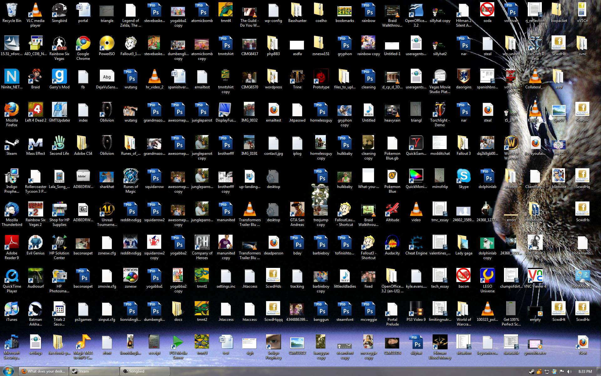

Spaces in files and directories can be a cause of bugs, and generally make life more difficult for programmers. Instead:
Good Habits:
_) or CamelCase instead of
spaces.
The file extension allows a file to be associated with a specific program. For example:
.txt is associated with a text editor..html is associated with a web browser.docx is associated with Microsoft Word.You can change the file extension to whatever you want (despite warnings you may receive).
Demo
test.txt.Good Habits:
Demo:
Use tree terminiology to draw and describe the following directory structure, from Game of Life - React
In particular:
src
├── App.tsx
├── Cell.tsx
├── GameGrid.tsx
├── Life.ts
├── assets
│ ├── desert_life_logo.webp
│ ├── favicon.ico
│ └── hc_mask_20.svg
├── index.css
├── main.tsx
└── vite-env.d.ts
.eslintrc.cjs
.firebaserc
.gitignore
favicon.png
...
Good Habits: